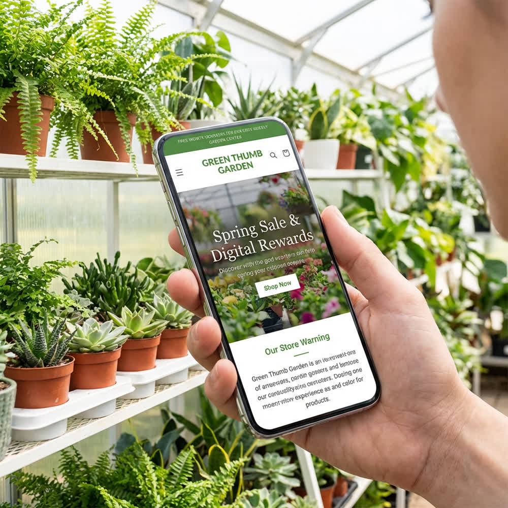

1. Executive Summary
Thommy, lass mich direkt sein.
Eure Baumschule ist ein fantastischer Betrieb. 90 Jahre Familientradition, eigene Produktion, eine Verkaufsfläche, die sich sehen lassen kann, und Kundenbewertungen, bei denen dir andere Unternehmer neidisch werden. 4,5+ Sterne, durchweg positives Feedback. Die Leute, die bei euch waren, lieben euch.
Viel zu wenige Leute finden euch. Eure Website ist aus dem Jahr 2005. Gebaut mit Xara Web Designer – einem Desktop-Publishing-Tool, das für Flyer gedacht war, nicht für Websites. Statische .htm-Dateien, keine mobile Ansicht, kein Content-Management-System. Auf dem Smartphone eurer Kunden sieht sie aus wie ein Relikt aus einer anderen Zeit. Und 2026 suchen 80%+ der Leute auf dem Smartphone.
Während ihr mit einer Website aus 2005 arbeitet, hat euer Hauptwettbewerber Baumschule Schauer (8 km entfernt, gleiches Einzugsgebiet!) eine moderne Website, bietet Gartenplanung, Mähroboter-Installation und Bewässerungsanlagen an. Die bauen sich gerade digital die Zukunft – und ihr guckt zu.
Dazu kommen zwei Dehner-Filialen, OBI, Hornbach und toom, die zusammen ein massives Gartencenter-Angebot in der Region darstellen. Und online fischt Venovi.de bereits gezielt nach Kunden, die „Baumschule Halle“ googeln – mit einer eigenen Landingpage dafür.
Ihr habt alle Trümpfe in der Hand. Sie liegen nur noch auf dem Tisch.
- „Seit 1934“ – Kein Baumarkt der Welt kann das bieten. 90 Jahre Familientradition schlagen jedes Dehner-Marketing.
- Eigene Produktion – Ihr zieht eure Pflanzen selbst auf. Das ist Qualität, die man sehen, anfassen und riechen kann.
- baumschule-halle.de – Die perfekte Domain. Die rankt quasi von alleine für „Baumschule Halle“.
- 4,5+ Sterne Bewertungen – Eure Kunden sind eure besten Vermarkter. Wir müssen nur mehr davon haben.
- Lage an der B6 – Tausende Autos fahren täglich an euch vorbei. Direkt an der Ausfallstraße Richtung A14.
Was diese Strategie erreichen soll
Nicht online verkaufen. 95%+ eures Umsatzes kommt aus dem Laden, und das soll auch so bleiben. Digitales Marketing soll Menschen IN EUREN LADEN bringen. Punkt.
März–Mai 2026
bis Ende 2026
alle lok. Suchbegriffe
bis Dezember 2026
Lass uns loslegen.
2. Dein Betrieb
Bevor wir über Marketing reden, müssen wir verstehen, was ihr eigentlich verkauft. Und das ist nicht „Pflanzen“. Pflanzen gibt es bei Dehner, OBI und im Aldi-Prospekt.
Was ihr verkauft, ist etwas anderes:
90 Jahre Familientradition – Seit 1934
1934. Das war das Jahr, in dem die Baumschule Göricke gegründet wurde. Seitdem haben sich Kriege, Regime, Wiedervereinigungen und Wirtschaftskrisen abgewechselt – und die Saalebaumschule steht immer noch. In der vierten Generation.
Kein Dehner, kein OBI, kein Hornbach hat diese Geschichte. Nicht mal annähernd.
Eigene Baumschulproduktion
Ihr verkauft nicht einfach Pflanzen, die ein LKW aus den Niederlanden anliefert. Ihr produziert selbst. Eure Obstgehölze, eure Bäume, eure Sträucher – die wachsen auf euren eigenen Flächen. In eurer Erde. In eurem Klima.
- Pflanzen, die an die Region angepasst sind – sie kennen den Boden, das Klima, die Winter
- Qualitätskontrolle vom Samenkorn bis zum Verkauf – kein anonymes Containerware-Roulette
- Fachberatung aus erster Hand – ihr wisst, was ihr verkauft, weil ihr es selbst großgezogen habt
Das ist ein USP, den 99% aller Gartencenter nicht haben. Bei Dehner kommt die Pflanze per Palette aus einem anonymen Großbetrieb. Bei euch kommt sie aus dem Beet hinter dem Laden.
Die Lage
Magdeburger Chaussee 16 – direkt an der alten B6, am nördlichen Rand von Halle Richtung A14-Auffahrt. Das ist eine der meistbefahrenen Ausfallstraßen der Region.
- Tausende Autos pro Tag passieren eure Einfahrt
- Suburbia-Korridor: Die Saalekreis-Gemeinden nördlich von Halle sind klassische Eigenheim-Gebiete
- Direkte Lage zwischen Stadt und Land – ihr erreicht sowohl die Hallenser Stadtbevölkerung als auch die Saalekreis-Gartenbesitzer
Das Sortiment
| Kategorie | Besonderheit |
|---|---|
| Obstgehölze | Kernkompetenz – eigene Produktion, riesige Auswahl |
| Rosen | Klassiker, immer gefragt |
| Rhododendron | Spezialsortiment, Kenner kommen dafür |
| Stauden | Pflegeleicht, Trend zu naturnahen Gärten |
| Bäume & Sträucher | Vom Solitärbaum bis zur Hecke |
| Formgehölze / Solitärgehölze | Premium-Segment – hoher Warenkorbwert |
| Beet- & Balkonpflanzen | Saisonale Massenware, hohes Volumen |
| Kräuter & Gemüse | Trend Selbstversorger! |
| Nadelgehölze | Dauerbrenner für Gärten und Hecken |
| Erde & Dünger | Cross-Selling-Potenzial |
| Töpfe & Deko | Impuls-Käufe, Zusatzumsatz |
| Weihnachtsbäume | Saisonal Zusatzumsatz Nov–Dez |
14 Produktkategorien auf 8.000-12.000 m² Verkaufsfläche. Das ist ein vollwertiges Gartencenter – nur mit dem Vorteil, dass es kein anonymer Kettenmarkt ist, sondern ein Familienbetrieb mit 90 Jahren Expertise.
Die Mannschaft
Thomas und Christian Göricke – zwei Brüder, die zusammen einen Betrieb führen. Persönliche Beratung von den Inhabern selbst. Keine Aushilfe, die letzte Woche noch an der Kasse im Supermarkt stand.
In den Kundenbewertungen taucht immer wieder auf: „Freundliche Beratung“, „tolle Auswahl“, „engagiertes Team“. Das bestätigen über 144 aggregierte Bewertungen aus vier Portalen – und die sind „überwältigend positiv“ (Cylex-Zusammenfassung).
Ihr habt ein verdammt gutes Produkt. Jetzt müssen nur genug Leute davon erfahren.
3. Dein Markt
Bevölkerung im Einzugsgebiet (30 km Radius)
| Region | Einwohner | Relevanz |
|---|---|---|
| Halle (Saale) | ~242.000 | Hauptmarkt, zweitgrößte Stadt Sachsen-Anhalts |
| Saalekreis | ~184.000 | Direktes Umland, hoher Eigenheimanteil |
| Teile Mansfeld-Südharz | ~30.000 | Erweitertes Einzugsgebiet |
| Teile Burgenlandkreis | ~20.000 | Erweitertes Einzugsgebiet |
| Gesamt | ~450.000–500.000 |
Das ist keine Kleinstadt-Baumschule. Das ist ein Betrieb, der potenziell eine halbe Million Menschen erreichen kann.
Wer sind eure Kunden?
Demografische Struktur Petersberg/Sennewitz
| Altersgruppe | Anteil | Bedeutung für euch |
|---|---|---|
| 0–17 Jahre | 15,2% | Junge Familien → neue Gärten |
| 18–64 Jahre | 56,3% | Hauptzielgruppe: Eigenheimbesitzer |
| 65+ Jahre | 28,5% | Stammkunden, treue Käufer, höchster Warenkorbwert |
Fast ein Drittel der lokalen Bevölkerung ist 65+. Das sind eure treuen Stammkunden. Aber Achtung: Demografischer Wandel bedeutet, dass diese Gruppe langfristig schrumpft. Ihr müsst auch die 30-50-Jährigen erreichen – und die suchen erstmal bei Google und Instagram.
Halle erlebt eine Abwanderung ins Umland. Junge Familien ziehen in den Saalekreis, bauen Eigenheime – und brauchen einen komplett neuen Garten. Das ist euer Wachstumsmarkt. Jeder Neubau = potenziell 2.000–10.000 € Pflanzenbedarf.
Kaufkraft – ehrlich betrachtet
| Region | Kaufkraftindex (DE=100) |
|---|---|
| Halle (Saale) | 89,2 |
| Saalekreis | 92,7 |
| Sachsen-Anhalt | 87,6 |
| Deutschland Durchschnitt | 100,0 |
Die Region liegt etwa 8–11% unter dem Bundesdurchschnitt. Kunden sind preissensibler als in München oder Hamburg. Aber: Der Saalekreis hat MEHR Kaufkraft als die Stadt Halle (92,7 vs. 89,2) – gut für euch, denn eure Lage in Petersberg/Sennewitz ist mitten im kaufkraftstärkeren Umland.
Die Kaufkraft ist ein Durchschnitt. Es gibt sehr wohl kaufkräftige Kunden – Akademiker der MLU Halle-Wittenberg, gut verdienende Pendler nach Leipzig, Eigenheimbesitzer im Saalekreis. Diese Zielgruppe sucht Qualität, nicht den billigsten Preis.
Saisonalität – Euer Geschäft in 3 Monaten
Das ist der Elefant im Raum:
70–75% des Jahresumsatzes in drei Monaten. Das bedeutet: Alles, was wir hier planen, muss darauf abzielen, die Hauptsaison maximal auszuschöpfen.
„70 Prozent unseres Jahresumsatzes machen wir von März bis Mai“ (Gärtnerin Geier, Süddeutsche Zeitung 2020)
Gartenmarkt Deutschland – Die großen Zahlen
Gartenmarkt DE 2024
2024 vs. 2023
am Gesamtumsatz
Der Online-Anteil im Gartenmarkt ist mit ~6% vergleichsweise gering – Pflanzen sind „Touch & Feel“-Produkte. Aber: Inspiration, Information und erste Kontaktaufnahme geschehen zunehmend online.
Marktanteile nach Vertriebskanal (2024)
Einzelhandelsgärtnereien/Blumenfachgeschäfte verlieren Marktanteile (-0,5 Prozentpunkte)! Discounter gewinnen. Wer nicht digital sichtbar ist, verliert.
Universität als versteckte Chance
Die Martin-Luther-Universität bringt ~20.000 Studenten in die Stadt. Das klingt erstmal nicht nach Baumschulkunden. Aber: Diese Studenten werden irgendwann Absolventen. Viele bleiben in der Region, gründen Familien, kaufen Häuser. Wenn ihr heute auf Instagram präsent seid, baut ihr Markenbekanntheit bei den Gartenbesitzern von morgen auf.
4. Deine Wettbewerber
4.1 Baumschule Schauer & Söhne – Euer Hauptgegner
Standort: Halle-Tornau, Brachstedter Str. 30 (~8 km) | Bewertung: 4,6 Sterne (22 Bewertungen)
Schauer ist euer gefährlichster Wettbewerber.
- Moderne Website: WordPress, responsive, HTTPS
- Breite Dienstleistungen: Gartenplanung, Grabpflege, Bewässerungsanlagen, Mähroboter
- Gleiche Lage: Norden von Halle, gleiches Einzugsgebiet
- Ordentliche 4,6 Sterne Bewertung
- Keinen Online-Shop – Gleichstand
- Wenig Social Media
- Keine 90 Jahre Tradition
- Kleinere Verkaufsfläche
- Unbekannte Eigenproduktion
Euer Vorteil über Schauer: Tradition, Größe, eigene Produktion. Aber Schauer gewinnt digital. Aktion: Website-Relaunch + Dienstleistungsspektrum erweitern = Schauer überholen.
4.2 Dehner Garten-Center – Der Riese (2x in der Region!)
Standorte: Halle-Bruckdorf + Peissen | Bewertungen: ~1.379, ★★★ ~3 Sterne
Dehner ist der 800-Pfund-Gorilla. Zwei Filialen, professioneller Online-Shop mit Click & Collect, Payback-Integration, und ein riesiges Marketingbudget.
Dehner hat nur 3 Sterne! Bei über 1.300 Bewertungen! Ihr habt 4,5+. Das ist ein 1,5-Sterne-Vorsprung, den kein Marketingbudget kaufen kann.
„Bei uns kaufst du keine Wegwerf-Pflanze, sondern einen Baum, der in 20 Jahren noch steht. Weil er hier aufgewachsen ist. Wie wir. Seit 1934.“
4.3 OBI, Hornbach, toom – Baumärkte mit Gartencenter
| Wettbewerber | Standort | Bewertung | Stärke | Schwäche |
|---|---|---|---|---|
| OBI | Grenzstraße 43 | k.A. | Großes Gartencenter, preisaggressiv | Baumarkt-Personal, keine Expertise |
| Hornbach | Delitzscher Str. 54 | 3,3 Sterne | Projektfokus, großes Sortiment | Schwache Gartencenter-Bewertung |
| toom | Angersdorf | k.A. | 3.500 m² Gartenfläche | Lage westlich, ab vom Schuss |
4.4 Online-Jäger: Venovi & Voigt
Venovi.de ist ein reiner Online-Baumversand – und hat eine eigene SEO-Landingpage für „Baumschule Halle“ erstellt. Die investieren in Google-Rankings speziell für EUER lokales Keyword. Das passiert jetzt schon.
Voigt Pflanzen (~35 km) ist physisch keine Bedrohung, aber digital aggressiv: Bio-Zertifizierung, aktives SEO mit lokalen Landingpages.
4.5 Die größte Gefahr: Aldi und Lidl
Klingt absurd? Ist es nicht. Discounter machen mittlerweile 7,5% des gesamten Gartenmarktes aus – Tendenz steigend. Wenn Aldi Geranien für 1,99 € und „Obstbäume“ für 4,99 € anbietet, sitzt der Preisanker. Plötzlich sind eure 24,99 € für einen ordentlichen Apfelbaum „teuer“.
„Unsere Apfelbäume tragen im zweiten Jahr. Der vom Discounter vertrocknet im ersten Sommer.“
Wettbewerber-Zusammenfassung
| Wettbewerber | Website | Bewertung | Service | Bedrohung |
|---|---|---|---|---|
| Baumschule Schauer | 6/10 ✔ | 4,6 ★ | Gartenplanung, Mähroboter | HOCH |
| Dehner (2x) | 9/10 ✔ | 3,0 ★ | Online-Shop, Click&Collect | HOCH |
| OBI | 9/10 ✔ | k.A. | Baumarkt + Gartencenter | MITTEL-HOCH |
| Hornbach | 9/10 ✔ | 3,3 ★ | Baumarkt + Gartencenter | MITTEL |
| toom | 7/10 | k.A. | 3.500 m² Garten | MITTEL |
| Venovi (online) | 8/10 ✔ | k.A. | SEO-Landingpage „BH Halle“ | MITTEL |
| Saalebaumschule | 2/10 ✘ | 4,5+ ★ | Kerngeschäft Pflanzen | – |
Ihr habt die besten Bewertungen aller Wettbewerber – und die schlechteste Website. Das ist eine Riesenchance, weil ihr nur eine Sache ändern müsst, um sofort besser dazustehen.
5. Dein Digitales Fundament
Ich werde hier nicht um den heißen Brei reden. Der digitale Zustand der Saalebaumschule ist kritisch. Aber – und das ist wichtig – es ist alles lösbar.
5.1 Website-Audit im Detail
| Aspekt | Befund | Bewertung |
|---|---|---|
| CMS | Keines – Xara Web Designer (Desktop-Tool für Flyer) | ✘ Katastrophal |
| Responsive Design | Praktisch nicht vorhanden | ✘ Katastrophal |
| HTTPS | Funktioniert, aber nicht erzwungen | ✘ Kritisch |
| Encoding | Windows-1252 statt UTF-8 | ✘ Veraltet |
| Navigation | Bildbasiert mit Rollover-Effekten | ✘ Nicht crawlbar |
| SEO-Spam | Keyword-Stuffing im Footer | ✘ Abstrafungsrisiko |
| DSGVO | Kein Cookie-Banner, keine Datenschutzerklärung | ✘ Rechtsverstoß! |
| HTML-Qualität | Doppelter <head> Tag, invalides HTML | ✘ |
| Layout | Absolut positionierte Pixel-Elemente | ✘ Nicht responsive |
| Server | Apache 2.4.66 (Unix) | ✔ OK |
| Domain | baumschule-halle.de | ✔ Perfekt |
| Aktualisierung | 07.01.2026 | ✔ Jemand pflegt noch |
Saalebaumschule
Schauer
Dehner
5.2 Was das im Alltag bedeutet
Szenario: Ein 35-jähriger Hallenser hat gerade ein Haus im Saalekreis gekauft. Der Garten ist leer. Er greift zum Smartphone und googelt „Baumschule Halle“.
- Er findet eure Website (weil die Domain so gut ist)
- Er öffnet sie auf dem Smartphone
- Er sieht... eine Desktop-Website von 2005. Text zu klein. Bilder abgeschnitten. Navigation kaum bedienbar.
- Er drückt „Zurück“ und klickt auf Baumschule Schauer. Moderne Website, alle Infos auf einen Blick.
- Er fährt zu Schauer.
5.3 DSGVO-Problem – Das ist nicht optional
Seit 2018 ist die DSGVO in Kraft. Eure Website hat: keine Datenschutzerklärung, kein Cookie-Banner, keine Information über Datenverarbeitung. Das ist ein Rechtsverstoß. Abmahnungen sind real.
Sofortmaßnahme: Datenschutzerklärung und Cookie-Banner. Kostet nichts, braucht 2 Stunden. Kann bei eRecht24 generiert werden.
5.4 Die gute Nachricht
- Domain ist fantastisch: baumschule-halle.de rankt quasi automatisch
- Zweite Domain: saale-baumschule.de redirected korrekt
- HTTPS funktioniert bereits – muss nur erzwungen werden
- Server ist stabil: Apache 2.4.66 – solider Webserver
- Jemand pflegt die Seite: Letzte Aktualisierung 07.01.2026

6. Website-Relaunch
Die bestehende Website zu „reparieren“ ist wie einen Trabant zu tunen: Egal was du reinschraubst, es bleibt ein Trabant. Es muss neu.
6.1 CMS-Empfehlung: WordPress
| Option | Kosten | Wartung | Flexibilität | Empfehlung |
|---|---|---|---|---|
| WordPress | 2.000–5.000 € | Einfach | Sehr hoch | EMPFOHLEN |
| Jimdo/Wix | 0–500 € | Sehr einfach | Eingeschränkt | Für Anfang OK, aber begrenzt |
| Shopify | 30–80 €/Monat | Einfach | E-Commerce fokussiert | Zu viel für euren Bedarf |
| Individuell | 3.000–10.000 € | Braucht Entwickler | Maximal | Zu teuer, nicht wartbar |
WordPress ist die richtige Wahl: 62% aller Websites weltweit laufen darauf, es ist einfach zu bedienen, erweiterbar, SEO-freundlich und responsive von Haus aus.
6.2 Welche Seiten braucht ihr?
| Seite | Zweck | Priorität |
|---|---|---|
| Startseite | Erster Eindruck, Sortimentsübersicht, Saisonales, „Seit 1934“ | KRITISCH |
| Über uns | Geschichte, Team, Fotos | KRITISCH |
| Sortiment (14 Unterseiten) | Je eine Seite pro Kategorie mit Beschreibung, Fotos, Beratung | KRITISCH |
| Blog/Ratgeber | SEO-Content, Pflegetipps, saisonale Artikel | KRITISCH |
| Kontakt/Anfahrt | Karte, Öffnungszeiten, Telefon, Kontaktformular | KRITISCH |
| Service | Heckenschnitt, Obstbaumschnitt, ggf. neue Services | HOCH |
| Galerie | Bilder der Baumschule, Sortiment, Saisons | HOCH |
| Weihnachtsbäume | Saisonale Landingpage (Nov–Dez) | HOCH |
| Jobs | Falls ihr Personal sucht | NORMAL |
| Impressum + Datenschutz | Pflicht (DSGVO!) | KRITISCH |
Gesamt: ~25–30 Seiten zum Start, erweiterbar.
6.3 Was die neue Website KÖNNEN muss
Non-negotiable (Pflicht)
- Responsive Design (Smartphone first!)
- HTTPS erzwungen
- Schnelle Ladezeit (<3 Sek.)
- DSGVO-konform
- Google Maps Einbindung
- Kontaktformular
- Blog-Funktion
- SEO-Grundoptimierung
- Öffnungszeiten + Telefon prominent
- Click-to-Call auf Mobilgeräten
Nice-to-have (Phase 2)
- Newsletter-Anmeldung
- Online-Terminbuchung
- Saisonkalender / Pflanzberater
- Video-Einbindung (YouTube)
- Event-/Workshop-Kalender
6.4 Zeitrahmen
| Phase | Dauer | Deadline |
|---|---|---|
| Briefing & Planung | 1 Woche | Mitte Februar |
| Design & Entwicklung | 2–3 Wochen | Ende Februar |
| Content-Erstellung | Parallel | Bis Anfang März |
| Test & Launch | 1 Woche | Spätestens 1. März 2026 |
7. Local SEO Strategie
Local SEO ist der größte Hebel für ein stationäres Geschäft. Das Beste: Das meiste kostet nichts außer Zeit.
7.1 Google Business Profile (GBP) – Eure digitale Visitenkarte
Das GBP ist das wichtigste digitale Asset für ein lokales Geschäft. Wenn jemand „Baumschule Halle“ googelt, zeigt Google zuerst die Karte – und dort entscheidet sich alles.
| Element | Aktuell | Ziel |
|---|---|---|
| Name | Saalebaumschule | ✔ Korrekt |
| Website | http://baumschule-halle.de | https://baumschule-halle.de |
| Sekundärkategorien | Fehlen vermutlich | „Gartencenter“, „Gärtnerei“, „Pflanzenzüchter“ |
| Beschreibung | Vermutlich leer/kurz | 750 Zeichen, mit Keywords, Heritage |
| Fotos | Unbekannt | Mindestens 30+ hochwertige Fotos! |
| Beiträge | Vermutlich keine | Wöchentlich posten |
| Produkte | Vermutlich nicht gepflegt | Alle 14 Sortimente eintragen |
| Bewertungen | ~100+, 4,5+ Sterne | Ziel: 200+ |
„Die Saalebaumschule – seit 1934 Ihr Familienbetrieb für Pflanzen und Gartenkultur in Halle (Saale). Auf über 8.000 m² Verkaufsfläche finden Sie bei uns alles für Ihren Garten: Obstgehölze aus eigener Aufzucht, Rosen, Rhododendron, Stauden, Bäume, Sträucher, Beet- und Balkonpflanzen, Kräuter, Erde und Dünger. Persönliche Fachberatung von den Inhabern Thomas und Christian Göricke – in über 90 Jahren gewachsene Expertise. Direkt an der B6 in Petersberg/Sennewitz. Kommen Sie vorbei!“
7.2 NAP-Konsistenz
NAP = Name, Address, Phone. Google prüft, ob eure Daten überall im Internet identisch sind.
Saalebaumschule
Magdeburger Chaussee 16
06193 Petersberg OT Sennewitz
034606-22855
Prüfen auf: Google Business, golocal.de, cylex.de, gelbeseiten.de, 11880.com, Das Örtliche, Facebook, Website
7.3 Lokale Keywords – Eure Goldmine
| Keyword | Suchvolumen/Monat | Aktuelle Position | Ziel |
|---|---|---|---|
| baumschule halle | 200–500 | Top 1–3 ✔ | Halten & ausbauen |
| gartencenter halle | 300–600 | Seite 1–2 | Top 3 |
| pflanzen kaufen halle | 100–300 | Unbekannt | Top 5 |
| obstbäume kaufen halle | 50–100 | Unbekannt | Top 3 |
| weihnachtsbaum halle | 500–1.000 | Unbekannt | Top 3 (saisonal!) |
| rosen kaufen halle | 30–80 | Unbekannt | Top 3 |
| heckenpflanzen halle | 20–50 | Unbekannt | Top 3 |
| balkonpflanzen halle | 50–150 | Unbekannt | Top 5 |
Für jedes dieser Keywords braucht ihr eine optimierte Seite auf der neuen Website – das sind eure 14 Sortiment-Unterseiten.
7.4 Schema.org Markup & Google Maps
Schema.org ist strukturierter Code, damit Google versteht, WAS ihr seid. Das macht der Webentwickler beim Relaunch – ist extrem wichtig und wird oft vergessen. Notwendige Typen: GardenStore, LocalBusiness, Product, AggregateRating.
Google Maps Optimierung:
- Fotos, Fotos, Fotos: Mindestens 30 Bilder
- 360°-Rundgang: Kostet ~200–400 €, enormer Unterschied
- Regelmäßige Beiträge: Alle 7 Tage – signalisiert Google: „Aktiver Betrieb“
8. Content-Marketing
Content-Marketing bedeutet: Ihr erstellt nützliche Inhalte, die eure Zielgruppe bei Google findet – und die sie dann zu euch in den Laden bringen.
Warum das funktioniert: Wenn jemand „Apfelbaum schneiden Anleitung“ googelt, hat er einen Apfelbaum (oder will einen kaufen). Wenn euer Blogartikel die beste Antwort liefert, vertraut er euch. Und wenn er dann einen neuen Apfelbaum braucht, kommt er zu euch.
8.1 Blog-Strategie
- Frequenz: 2–4 Artikel pro Monat. Lieber weniger, aber gut.
- Länge: 800–1.500 Wörter pro Artikel (SEO-optimiert).
- Wer schreibt? Ihr selbst (mit Anleitung) oder ein Content-Freelancer (100–200 € pro Artikel).
8.2 Content-Kalender – 12 Monate Themen-Ideen
| Monat | Themen |
|---|---|
| Januar Winterpause | • Gartenplanung im Winter: 5 Schritte zum Traumgarten • Obstbaum-Sorten für den Saalekreis • Planung und Foto-Produktion |
| Februar Vorbereitung | • Wann Obstbaumschnitt? (Suchvolumen steigt!) • Frühjahrs-Checkliste: Garten aus dem Winterschlaf wecken • Unsere Neuheiten für 2026 (Teaser!) |
| März SAISONSTART | • Rosen pflanzen: Schritt-für-Schritt • Welche Hecke passt zu mir? Großer Ratgeber • 10 Frühblüher für sofortige Farbe |
| April HOCHSAISON | • Rhododendron-Pflege • Obstgehölze aus eigener Aufzucht • Balkonpflanzen für jeden Balkon |
| Mai UMSATZKÖNIG | • Kräutergarten anlegen • Stauden-Kombinationen • Gemüse auf dem Balkon (Selbstversorger-Trend) |
| Juni | • Sommerpflege: Garten durch die Hitze • Rosen schneiden nach der ersten Blüte • Insektenfreundlicher Garten (Biodiversitäts-Trend) |
| Juli | • Urlaubsbewässerung • Hortensien: Sorten und Pflege • Ein Tag in der Saalebaumschule (Storytelling) |
| August | • Herbstpflanzung vorbereiten • Heidelbeeren im Garten • Rasen reparieren nach dem Sommer |
| September | • 10 beste Obstbäume für den Herbst • Garten winterfest machen: Checkliste • Warum Herbstpflanzung besser ist |
| Oktober | • Rosen überwintern • Blumenzwiebeln setzen • Kompost anlegen |
| November | • Weihnachtsbaum kaufen in Halle: Der Ratgeber • Adventskränze und Winterdeko • Den richtigen Weihnachtsbaum finden |
| Dezember | • Weihnachtsbaum frisch halten (Praxis-SEO!) • Gartenbücher als Geschenkidee • Jahresrückblick 2026 |
Das sind 36 Themen-Ideen für 12 Monate. Jeder Artikel zieht organischen Traffic – kostenlos, dauerhaft.
8.3 Lokaler Content-Vorteil
Nicht „Obstbäume pflanzen“, sondern „Obstbäume pflanzen in Halle und dem Saalekreis – welche Sorten eignen sich für unsere Region?“
Lokale Hooks: Böden im Saalekreis, Klimazone 7a/7b, typische Gartentypen der Region, lokale Schädlinge, „Unsere Empfehlung für den Saalekreis“
9. Social Media Strategie
9.1 Instagram – Der größte Quick Win
Das ist ein riesiges Versäumnis – und eine riesige Chance. Pflanzen sind DAS perfekte Instagram-Produkt: visuell ansprechend, saisonaler Wandel, hohes Engagement (#Garten hat 5+ Millionen Posts).
Account einrichten als Business-Profil:
Name: @saalebaumschule
Bio: „Seit 1934 | Baumschule & Gartencenter in Halle/Saale | Eigene Aufzucht | Fachberatung | Petersberg“
Content-Formate
| Format | Frequenz | Beispiele |
|---|---|---|
| Feed-Posts | 3–4x/Woche | Pflanze des Tages, Sortiment-Highlights, Saisonales |
| Stories | Täglich | Behind the Scenes, Wetter, Quick Tips |
| Reels | 1–2x/Woche | Obstbaumschnitt in 60 Sek., Rundgang, Zeitraffer |
| Carousel | 1x/Woche | „5 Rosen für Anfänger“, Vorher/Nachher |
Konkrete Post-Ideen
- „Was blüht gerade bei uns?“ – Wöchentliches Update
- „Thommys Tipp der Woche“ – Pflege-Tipps vom Chef persönlich
- „Kundengärten“ – User Generated Content!
- „Pflanze der Woche“ – Sortenvorstellung mit Pflege-Infos
- „Hinter den Kulissen“ – Wie eine Pflanze aufgezogen wird
- „Was muss ich jetzt im Garten tun?“ – Saisonaler Quick-Guide
- „Weihnachtsbaum-Saison“ – Vom Anbau bis zum Verkauf
- „Seit 1934“ – Historische Fotos, Familiengeschichte
Ziel: 500 Follower in 3 Monaten, 1.500 in 12 Monaten.
9.2 Facebook – Das Bestehende verbessern
Status quo: ~627 Likes, 8 „talking about this“, 58 Check-ins. Schwach
Facebook ist nicht tot – gerade bei der Zielgruppe 45+ ist es nach wie vor relevant.
Sofort-Maßnahmen:
- Seiteninfos vervollständigen
- Profilbild und Titelbild aktualisieren mit „Seit 1934“-Branding
- Posting-Frequenz: Mindestens 3x/Woche (gleicher Content wie Instagram, crossposten!)
- Facebook Events nutzen: Frühlingseröffnung, Rosentage, Weihnachtsbaumverkauf
- In lokalen Facebook-Gruppen aktiv werden
Ziel: 1.500 Likes bis Dezember 2026.
9.3 YouTube – Langfristiges Potenzial
YouTube ist die zweitgrößte Suchmaschine der Welt. Garten-Videos haben enormes Potenzial.
Empfehlung: Nicht sofort starten. Erst Website + Instagram. YouTube ab Sommer/Herbst 2026 mit einfachen Handy-Videos. Ein Video pro Monat reicht zum Start.
10. Google Ads
Google Ads sind der schnellste Weg, ganz oben bei Google zu erscheinen. Während SEO Monate braucht, bringen Ads sofortigen Traffic. Für die Saalebaumschule: Primär saisonal – von Februar bis Mai und November–Dezember.
10.1 Kampagnen-Struktur
Keywords: baumschule halle, gartencenter halle, gärtnerei halle saale, pflanzen kaufen halle
Anzeigentext: „Saalebaumschule – Seit 1934 | Eigene Aufzucht, 8.000 m² Auswahl. Persönliche Beratung vom Familienunternehmen. Mo–Sa geöffnet.“
Keywords: obstbaum kaufen halle, apfelbaum kaufen, obstgehölze baumschule
Anzeigentext: „Obstbäume aus eigener Aufzucht | Saalebaumschule seit 1934. Apfel, Kirsche, Birne, Pflaume – regional aufgezogen.“
Keywords: weihnachtsbaum kaufen halle, nordmanntanne halle, christbaum kaufen
Anzeigentext: „Weihnachtsbäume | Saalebaumschule seit 1934. Nordmanntanne, Blaufichte, Nobilis – frisch geschlagen.“
11. Kundenbindung
Einen neuen Kunden zu gewinnen kostet 5–10x mehr als einen bestehenden zu halten. Eure 4,5+ Sterne zeigen: Wer bei euch war, ist begeistert. Jetzt müssen wir sicherstellen, dass er wiederkommt und andere mitbringt.
11.1 Newsletter – Direkter Draht zum Kunden
E-Mail-Marketing hat den höchsten ROI aller digitalen Kanäle: Für jeden investierten Euro kommen im Durchschnitt 36 € zurück (DMA 2023).
| Element | Empfehlung |
|---|---|
| Tool | Brevo (ehem. Sendinblue) – kostenlos bis 300 Mails/Tag |
| Anmeldeformular | Prominent auf Startseite + Footer der neuen Website |
| Incentive | „10% auf deinen nächsten Einkauf“ oder „Kostenloser Pflegekalender als PDF“ |
| Frequenz | 1x im Monat (in der Saison 2x) |
| Am Tresen | QR-Code oder Tablet zum Eintragen |
| Ziel | 500 E-Mail-Adressen bis Ende 2026 |
11.2 Bewertungs-Strategie – Mundpropaganda systematisieren
Eure Bewertungen sind euer stärkstes Asset. 4,5+ Sterne vs. Dehners 3 Sterne – ein 1,5-Sterne-Vorsprung, den kein Marketingbudget kaufen kann. Aber: ~100 Bewertungen reichen nicht. Je mehr, desto glaubwürdiger.
- An der Kasse fragen: „Wir würden uns über eine Google-Bewertung freuen!“
- QR-Code aufstellen: Am Tresen, an der Kasse, am Ausgang (Kosten: 5 €)
- Bewertungskärtchen: Visitenkarten-groß, in jede Tüte legen
- Auf jede Bewertung antworten: Positiv = Danke. Negativ = Ernst nehmen + Lösung
- Saisonale Review-Kampagne: Im Mai „Bewertungswoche“ mit Gratis-Samentüte
11.3 Stammkunden-Programm
Kein kompliziertes Punktesystem. Stattdessen:
- VIP-Newsletter: Stammkunden erhalten Angebote 24h vor allen anderen
- Persönliche Beratungstermine: Top-Kunden buchen 30-Min-Termin mit Thomas oder Christian
- Events nur für Stammkunden: Exklusiver Gartenrundgang, Vorverkauf Weihnachtsbäume
- „Baumschul-Paten“-Programm: Kunden mit Baum bekommen jährlich Pflegetipps per Mail
12. Heritage-Marketing
Hier liegt euer größter, ungenutzter Schatz. 90+ Jahre Familientradition – das ist kein Marketing-Gag, das ist ein fundamentaler Vertrauensvorteil, den kein Wettbewerber kopieren kann.
12.1 Warum Heritage so mächtig ist
In einer Welt voller austauschbarer Produkte suchen Menschen nach Echtheit. „Seit 1934“ sagt dem Kunden:
- „Die wissen, was sie tun.“ – 90 Jahre Erfahrung schlagen jedes Zertifikat
- „Die sind morgen noch da.“ – Kein Startup, das übermorgen schließt
- „Die stehen hinter ihrem Produkt.“ – Familienname = Qualität
- „Die gehören hierher.“ – Regional verwurzelt, nicht austauschbar
Gegen Dehner: „Seit 1934 haben wir für jede Pflanze persönlich gesorgt. Bei welchem Baumarkt können Sie das sagen?“